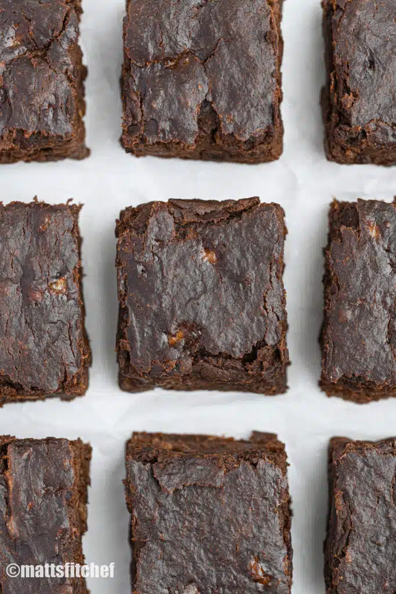

| Ingridient |
Ammount |
| Bananas |
3 medium ripe pcs |
| Peanut butter |
1 cup |
| Cocoa powder |
1 table spoon |
- In a large bowl, mash 3 ripe bananas. When they are completely mashed, add peanut butter and stir the mixture until smooth. Sift in cocoa powder, give it a mix and transfer to a brownie pan folded with parchment paper.
- Bake flourless brownies in hot oven for 22 to 30 minutes (mine took exactly 27 minutes). Let cool completely at room temperature before slicing.
- After baking, let the flourless brownies cool at room temperature. Then seal in an airtight food container and store at room temperature for up to 3 days. You can also refrigerate for up to 5 days.